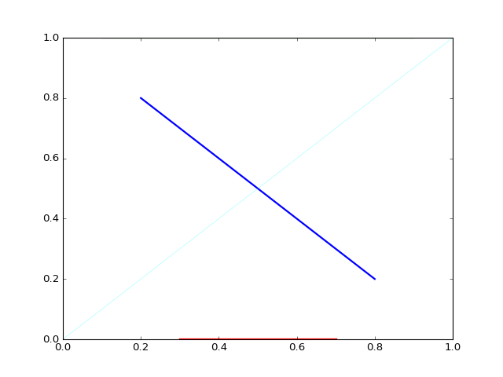

pylayers.util.geomutil¶
Geomlist Class¶
Geomlist.__init__(_filename[, clear]) |
|
Geomlist.append(strg) |
append a line in .list file |
GeomVect Class¶
GeomVect.__init__([_filename, clear]) |
|
GeomVect.segments(ds[, i2d, linewidth]) |
display segments |
GeomVect.geomBase(M[, pt, col, linewidth, scale]) |
Construct a geomview vect file for vizualisation of a frame |
GeomVect.points(pt[, colorname]) |
Geomview display a set of points with color |
Geomoff Class¶
Geomoff.__init__([_filename]) |
|
Geomoff.loadpt() |
load points |
Geomoff.savept(ptnew, _fileoff) |
|
Geomoff.polygon(p, poly) |
create geomview off for polygon |
Geomoff.polygons(p, polys) |
create a gemoff file for a list of polygons |
Geomoff.cylinder(r, l[, nphi, nl, col, alpha]) |
create a cylinder |
Geomoff.box([extrem]) |
create a box |
Geomoff.pattern(theta, phi, E, **kwargs) |
export antenna pattern in a geomview format |
Plot_Shapely Class¶
Plot_shapely.__init__(obj, ax[, coul, alph]) |
object constructor |
Plot_shapely.plot_coords() |
points |
Plot_shapely.plot_ligne() |
lines |
Plot_shapely.plot_polygon() |
polygons |
Plot_shapely.plot_multi() |
multipoints, multilignes,multipolygones + GeometryCollection |
LineString Class¶
LineString.__init__(p) |
|
LineString.plot(**kwargs) |
plot LineString |
PolyGon Class¶
Polygon.__init__([p, vnodes, delta]) |
object constructor |
Polygon.plot(**kwargs) |
plot function |
Polygon.__init__([p, vnodes, delta]) |
object constructor |
Polygon.__add__(p) |
add 2 polygons |
Polygon.__repr__() |
|
Polygon.ndarray() |
get a ndarray from a Polygon |
Polygon.signedarea() |
get the signed area of the polygon |
Polygon.plot(**kwargs) |
plot function |
Polygon.simplify() |
simplify polygon - suppress adjacent colinear segments |
Polygon.buildGv(**kwargs) |
Create visibility graph for a polygon |
Polygon.showGv(**kwargs) |
show graph Gv |
Polygon.ptconvex([display]) |
Return a list of booleans indicating points convexity |
Utility Functions¶
angular(p1, p2) |
determine angle between p1 and p2 in inerval [0 2pi] | ||
vecang(v1, v2) |
angle between v1 and v2 , result in [0,2*pi] | ||
SignedArea([p]) |
Calculate the signed area of a sequence of points in a plane | ||
Centroid([p]) |
Determine the centroid of the polygon defined by a sequence of points in a plane | ||
Lr2n([p, closed]) |
Linear ring to normal | ||
isBetween(p1, p2, p[, epsilon]) |
test if p is between p1 and p2 | ||
pvec(v1, v2) |
cross product between v1 and v2 | ||
pvecn(v1, v2) |
cross product and normalization | ||
onb(A, B, v) |
orthonormal basis from 2 points defining an axe and a vector | ||
vec_sph(th,ph) |
return Spherical orthonormal frame | ||
ellipse(fd, p, vth, vph, Eth, Eph, N) |
build a geomview file of an ellipse | ||
normalize(vec) |
normalize an array of N ndim vectors | ||
ptonseg(pta, phe, pt) |
return a point on the segment (pta,pte) | ||
dptseg(p, pt, ph) |
distance between a set of points and a segment | ||
linet(ax, p1, p2[, al, color, linewidth]) |
draw a short line segment | ||
ccw(a, b, c) |
counter clock wise order | ||
are_points_inside_cone(points, apex, v[, radius]) |
determine if a set of points are inside a cone | ||
intersect_cone_seg(line0, line1, seg[, ...]) |
|
||
intersect_halfline_seg(line, seg) |
intersect a half line and a segment | ||
intersect3(a, b, pg, u1, u2, l1, l2[, binter]) |
Intersection of a line and a 3D rectangle screen | ||
intersect(a, b, c, d) |
check if segment AB intersects segment CD in 2D | ||
is_aligned3(a, b, c[, tol]) |
test aligment of 3 points | ||
is_aligned4(a, b, c, d[, tol]) |
test aligment of 4 points | ||
isleft(a, b, c[, tol]) |
Test point c is at left of the vector a–>b | ||
isleftorequal(a, b, c) |
|||
affine(X, Y) |
find affine transformation | ||
cylmap(Y[, r, l]) |
find affine transformation for a specific cylinder | ||
MRot3(a, axe) |
Return a 3D rotation matrix along axe 0|1|2 | ||
MATP(sl, el, phi, tilt, pol) |
Calculate a rotation matrix for antenna pointing and orientation control | ||
MEulerAngle(alpha, beta, gamma) |
Calculate a rotation matrix from 3 Euler angles | ||
SphericalBasis(a) |
construct a spherical basis from a direction theta,phi | ||
angledir(s) |
evaluate (theta,phi) from direction vector | ||
Bthph(th, ph, M) |
Return theta and phi tranformed from a rotation matrix M | ||
BTB(a_g, T) |
Produce a set of rotation matrices for passage between global and local frame | ||
plot_coords(ax, ob[, color]) |
plotting coord of a shapely object | ||
plot_bounds(ax, ob[, color]) |
plot bounds | ||
plot_line(ax, ob[, color]) |
plot line | ||
v_color(ob) |
return color | ||
plotPolygon(poly[, color, alpha]) |
plot a shapely Polygon | ||
shrinkPolygon(poly[, d]) |
shrink polygon | ||
shrinkPolygon2(poly1[, d]) |
shrink Polygon | ||
simplifyPolygon(poly1) |
Simplify polygon : suppress adjacent colinear segments | ||
wall_delta(x1, y1, x2, y2[, delta]) |
Identification of new points | ||
plot_coords2(ax, ob) |
plot point from coordinates | ||
plot_bounds2(ax, ob) |
plot bounds v2 | ||
plot_line2(ax, ob) |
plot line v2 | ||
plot_coords3(ax, ob, color) |
plot coors v3 | ||
plot_bounds3(ax, ob, color) |
plot bounds v3 | ||
plot_line3(ax, ob, color) |
plot lines v3 | ||
valid_wedge(ps, pw, p1, p2, grazing) |
check set of N wedge sector validity for point ps | ||
sector(p1, p2, pt) |
non signed angular sector between | ||
dist(x, y, ax) |
calculates distance between two arrays along a given axis | ||
line_intersection(l1, l2) |
intersection between two 2D lines using shapely | ||
linepoly_intersection(l, poly) |
intersection between a 2D line and a 2D polygon using shapely | ||
mirror(p, pa, pb) |
compute the image of p wrt the segment (pa,pb) | ||
distseg(a, b, c, d, alpha, beta) |
distance to segments | ||
dmin3d(a, b, c, d) |
evaluate the minimal distance between 2 set of segments |
-
pylayers.util.geomutil.BTB(a_g, T)[source]¶ Produce a set of rotation matrices for passage between global and local frame
Parameters: a_g : angle in global reference frame Nx2
T : Tx rotation matrix 3 x 3
Returns: R : np.array (2x2xN)
Rotation matrix in the wave plane
a_l : np.array (Nx2)
angle in local frame
See also
-
pylayers.util.geomutil.Bthph(th, ph, M)[source]¶ Return theta and phi tranformed from a rotation matrix M
th (N) ph (N) M (3,3)
Returns: theta,phi Notes
This function is convenient for Antennas in addition of MATP. MATP returns a rotation matrix M which allow the transformation from a local basis to a global basis.
Using Bthph with MATP allows to evaluate the Antenna for given theta phi in a global basis and determine associated gain values in the Antenna local basis
-
pylayers.util.geomutil.Centroid(p=array([[ 0, 10, 10, 0], [ 0, 0, -2, -2]]))[source]¶ Determine the centroid of the polygon defined by a sequence of points in a plane
Parameters: p : np array
polygon (2xNp)
Returns: pc = Centroid()
References
http://en.wikipedia.org/wiki/Centroid
Examples
>>> from pylayers.util.geomutil import * >>> p = np.array([[0,10,10,0],[0,0,-2,-2]]) >>> pc = Centroid(p) >>> d = pc-np.array([5.,-1]) >>> md = np.dot(d,d) >>> assert(md<1e-15)
-
class
pylayers.util.geomutil.GeomVect(_filename='geomdef', clear=False)[source]¶ Geomview VECT file class
- NPolylines NVertices NColors
- Nv[0] ... Nv[NPolylines-1] # number of vertices in each polyline
- Nc[0] ... Nc[NPolylines-1] # number of colors supplied in each polyline
- Vert[0] ... Vert[NVertices-1] # All the vertices (3*NVertices floats)
- Color[0] ... Color[NColors-1] # All the colors (4*NColors floats, RGBA)
VECT objects represent lists of polylines (strings of connected line segments, possibly closed).A degenerate polyline can be used to represent a point: A VECT file begins with the key word VECT or 4VECT and three integers:
- NLines, NVertices, and NColors.
- Here NLines is the number of polylines in the file, NVertices the total number of vertices, and NColors the number of colors as explained below. Next come NLines 16-bit integers
- Nv[0] Nv[1] Nv[2] ... Nv[NLines-1]
giving the number of vertices in each polyline. A negative number indicates a closed polyline; 1 denotes a single-pixel point. The sum (of absolute values) of the Nv[i] must equal NVertices. Next come NLines more 16-bit integers Nc[i]: the number of colors in each polyline. Normally one of three values:
- 0 : No color is specified for this polyline.
- It’s drawn in the same color as the previous polyline.
- 1 : A single color is specified.
- The entire polyline is drawn in that color.
- abs(Nv[i]) : Each vertex has a color.
- Either each segment is drawn in the corresponding color, or the colors are smoothly interpolated along the line segments, depending on the implementation.
- Next come NVertices groups of 3 or 4 floating-point numbers:
- the coordinates of all the vertices.
If the keyword is 4VECT then there are 4 values per vertex. The first abs(Nv[0]) of them form the first polyline,
the next abs(Nv[1]) form the second and so on.- Finally NColors groups of 4 floating-point numbers give red,
- green, blue and alpha (opacity) values.
The first Nc[0] of them apply to the first polyline, and so on.
Methods
geomBase(M[, pt, col, linewidth, scale])Construct a geomview vect file for vizualisation of a frame points(pt[, colorname])Geomview display a set of points with color ellipse display an ellipse -
geomBase(M, pt=array([ 0., 0., 0.]), col=array([[0, 0, 1], [0, 1, 0], [1, 0, 0]]), linewidth=3, scale=1)[source]¶ Construct a geomview vect file for vizualisation of a frame
Parameters: M : ndarray (3 x 3 )
[ v1, v2, v3 ]
pt : np.array
origin point (default (0,0,0))
col :
color (3x3)
linewidth :
linewidth (default 3)
Notes
by default the geomview filename is base0.vect
Examples
>>> from pylayers.util.geomutil import * >>> import numpy as np >>> v1 = np.array([1,0,0]) >>> v2 = np.array([0,1,0]) >>> v3 = np.array([0,0,1]) >>> M = np.vstack((v1,v2,v3)) >>> #gv = GeomVect('test') >>> #gv.geomBase(M) >>> #gv.show3()
-
points(pt, colorname='blue')[source]¶ Geomview display a set of points with color
Parameters: pt
sequence of points np.ndarray or dictionnary whose value is a tuple (x,y,z)
colorname
a colorname from coldict keys
Examples
>>> import numpy as np >>> from pylayers.util.geomutil import * >>> import scipy as sp >>> pt1 = sp.rand(3,10) >>> pt2 = { 1:(0,0,0),2:(10,10,10),3:(0,10,0),4:(10,0,0)} >>> gv1 = GeomVect('test1') >>> gv1.points(pt1) >>> #gv1.show3() >>> gv2 = GeomVect('test2') >>> gv2.points(pt2) >>> #gv2.show3()
-
class
pylayers.util.geomutil.Geomlist(_filename, clear=False)[source]¶ Methods
append(strg)append a line in .list file help([letter, typ])generic help show3()
-
class
pylayers.util.geomutil.Geomoff(_filename='geomoff')[source]¶ Notes
Class Geomview OFF File (Object File Format) [ST][C][N][4][n]OFF #header keyword [Ndim] # spac dimension of vertices, present only if nOFF NVertices NFaces NEdges
x[0],y[0] z[0]
# Vertices,possibly with normals #colors, and/or texture coordinates, in that order, if the # prefixes N , C , ST are present # If 4OFF , each vertex has 4 components # including a final homogeneous component # If nOFF, each vertex has Ndim components # If 4nOFF , each vertex has Ndim+1 components .... x[NVertices-1],y[NVertices-1],z[NVertices-1]
# Faces # Nv = # vertices on this face # v[0] ... v[Nv-1] : vertex indices # in range 0... NVertices -1
Nv v[0] v[1] ....v[Nv-1] colorspec
# colorspec continues past v[Nv-1] # to end-of-line may be 0 to 4 numbers # nothing default # integer : colormap index (read from the file cmap.fmap) # 3 or 4 integers RGB[A] values 0..255 #
Methods
box([extrem])create a box cylinder(r, l[, nphi, nl, col, alpha])create a cylinder help([letter, typ])generic help loadpt()load points pattern(theta, phi, E, **kwargs)export antenna pattern in a geomview format polygon(p, poly)create geomview off for polygon polygons(p, polys)create a gemoff file for a list of polygons savept(ptnew, _fileoff)show3()-
box(extrem=array([-1, 1, -1, 1, -3, 3]))[source]¶ create a box
Parameters: extrem : ndarray
(1x6) [xmin,xmax,ymin,ymax,zmin,zmax]
Examples
>>> geo = Geomoff('test') >>> geo.box()
-
cylinder(r, l, nphi=20, nl=3, col=[1.0, 0.0, 1.0], alpha=0.1)[source]¶ create a cylinder
Parameters: r : radius
l : length
nphi : number of phi
nl : number of l
col : list [r,g,b]
alpha : transparency
-
pattern(theta, phi, E, **kwargs)[source]¶ export antenna pattern in a geomview format
Parameters: theta : np.array (,Nt)
phi : np.array (,Np)
E : np.array complex (Nt,Np)
po : origin (1x3)
T : rotation matrix (3x3)
minr : radius of minimum
maxr : radius of maximum
ilog : True (log) False (linear)
Examples
>>> from pylayers.util.geomutil import * >>> import numpy as np >>> th = np.arange(0,np.pi,0.05) >>> ph = np.arange(0,2*np.pi,0.05) >>> E = 1.5*np.sin(th[:,np.newaxis])*np.cos(0*ph[np.newaxis,:]) >>> g = Geomoff('dipole') >>> g.pattern(th,ph,E) >>> g.show3()
-
polygon(p, poly)[source]¶ create geomview off for polygon
Parameters: p : nparray
sequence of points
poly : list
point numbers (index starting in 0)
-
-
class
pylayers.util.geomutil.Geomview(_filename, clear=False)[source]¶ Geomview file class
This class is parent of GeomVect Geomlist Geomoff
Methods
show3()
-
class
pylayers.util.geomutil.LineString(p)[source]¶ Overloaded shapely LineString class
Attributes
areaUnitless area of the geometry (float) array_interface_baseboundaryReturns a lower dimension geometry that bounds the object boundsReturns minimum bounding region (minx, miny, maxx, maxy) centroidReturns the geometric center of the object convex_hullImagine an elastic band stretched around the geometry: that’s a coordsAccess to geometry’s coordinates (CoordinateSequence) ctypesenvelopeA figure that envelopes the geometry geom_typeName of the geometry’s type, such as ‘Point’ has_zTrue if the geometry’s coordinate sequence(s) have z values (are is_closedTrue if the geometry is closed, else False is_emptyTrue if the set of points in this geometry is empty, else False is_ringTrue if the geometry is a closed ring, else False is_simpleTrue if the geometry is simple, meaning that any self-intersections is_validTrue if the geometry is valid (definition depends on sub-class), lengthUnitless length of the geometry (float) typewkbWKB representation of the geometry wkb_hexWKB hex representation of the geometry wktWKT representation of the geometry xySeparate arrays of X and Y coordinate values Methods
almost_equals(other[, decimal])Returns True if geometries are equal at all coordinates to a array_interface()Provide the Numpy array protocol. buffer(distance[, resolution, quadsegs, ...])Returns a geometry with an envelope at a distance from the object’s contains(other)Returns True if the geometry contains the other, else False covers(other)Returns True if the geometry covers the other, else False crosses(other)Returns True if the geometries cross, else False difference(other)Returns the difference of the geometries disjoint(other)Returns True if geometries are disjoint, else False distance(other)Unitless distance to other geometry (float) empty([val])equals(other)Returns True if geometries are equal, else False equals_exact(other, tolerance)Returns True if geometries are equal to within a specified geometryType()help([letter, typ])generic help interpolate(*args, **kwargs)Return a point at the specified distance along a linear geometry intersection(other)Returns the intersection of the geometries intersects(other)Returns True if geometries intersect, else False overlaps(other)Returns True if geometries overlap, else False parallel_offset(distance[, side, ...])Returns a LineString or MultiLineString geometry at a distance from the object on its right or its left side. plot(**kwargs)plot LineString project(*args, **kwargs)Returns the distance along this geometry to a point nearest the relate(other)Returns the DE-9IM intersection matrix for the two geometries relate_pattern(other, pattern)Returns True if the DE-9IM string code for the relationship between representative_point(*args, **kwargs)Returns a point guaranteed to be within the object, cheaply. simplify(*args, **kwargs)Returns a simplified geometry produced by the Douglas-Peucker svg([scale_factor, stroke_color])Returns SVG polyline element for the LineString geometry. symmetric_difference(other)Returns the symmetric difference of the geometries to_wkb()to_wkt()touches(other)Returns True if geometries touch, else False union(other)Returns the union of the geometries (Shapely geometry) within(other)Returns True if geometry is within the other, else False -
plot(**kwargs)[source]¶ plot LineString
Parameters: show : boolean
fig : figure object
ax : axes object
linewidth : int
color : string
default #abcdef”
alpha : float
transparency (default 0.8)
figsize : tuple
Examples
>>> from pylayers.util.geomutil import * >>> import matplotlib.pyplot as plt >>> import numpy as np >>> l1 = np.array([[0,1,1,0],[0,0,1,1]]) >>> L1 = LineString(l1) >>> l2 = [[3,4,4,3],[1,1,2,2]] >>> L2 = LineString(l2) >>> fig,ax = L1.plot(color='red',alpha=0.3,linewidth=3) >>> fig,ax = L2.plot(fig=fig,ax=ax,color='blue',alpha=0.7,linewidth=2) >>> title = plt.title('test plotting LineString')(Source code, png, hires.png, pdf)

-
{kind=link}
{kind=link}
-
pylayers.util.geomutil.Lr2n(p=array([[ 0, 10, 10, 0], [ 0, 0, -2, -2]]), closed=True)[source]¶ Linear ring to normal
Parameters: p : np.array (2xN)
- closed : boolean
default True
Returns: n : np.array (2xN)
normal
p3 x——————x p2
Examples
>>> import shapely.geometry as shg >>> import matplotlib.pyplot as plt >>> import numpy as np >>> points1 = shg.MultiPoint([(0, 0), (0, 1), (1, 1), (1,0 )]) >>> points2 = shg.MultiPoint([(0, 0), (1, 0), (1, 1), (0,1 )]) >>> poly1 = shg.Polygon(points1) >>> poly2 = shg.Polygon(points2) >>> lring1 = poly1.exterior >>> lring2 = poly2.exterior >>> x1,y1 = lring1.xy >>> x2,y2 = lring2.xy >>> p1 = np.array([x1[0:-1],y1[0:-1]]) >>> p2 = np.array([x2[0:-1],y2[0:-1]]) >>> n1 = Lr2n(p1) >>> n2 = Lr2n(p2)
-
pylayers.util.geomutil.MATP(sl, el, phi, tilt, pol)[source]¶ Calculate a rotation matrix for antenna pointing and orientation control
Parameters: sl : np.array (,3) unitary
main radiation direction in antenna local frame
el : np.array(,3) unitary
main direction in the E field plane
phi : float 0<phi<2*pi
tilt : float -pi/2<tilt<pi/2
pol : string ‘H’ (Horizontal) or ‘V’ (Vertical)
-
pylayers.util.geomutil.MEulerAngle(alpha, beta, gamma)[source]¶ Calculate a rotation matrix from 3 Euler angles
Parameters: alpha : float
rotation along axis z
beta : float
rotation along axis x
gamma : float
rotation along axis y
Returns: T : np.array (3x3)
rotation matrix
Warning
Bizarre I was expected
-1 0 0 0 0 1 0 1 0 Examples
>>> import numpy as np >>> T=MEulerAngle(np.pi/2,np.pi/2,np.pi/2)
-
pylayers.util.geomutil.MRot3(a, axe)[source]¶ Return a 3D rotation matrix along axe 0|1|2
Parameters: a : angle (radians)
axe : 0:x 1:y 2:z
-
class
pylayers.util.geomutil.Plot_shapely(obj, ax, coul=None, alph=1)[source]¶ draw Shapely with matplotlib - pylab Plot_shapely.py Author : Martin Laloux 2010
Attributes
plotdraw w.r.t geometrical type Methods
help([letter, typ])generic help plot_coords()points plot_ligne()lines plot_multi()multipoints, multilignes,multipolygones + GeometryCollection plot_polygon()polygons -
plot¶ draw w.r.t geometrical type
-
-
class
pylayers.util.geomutil.Polygon(p=[[3, 4, 4, 3], [1, 1, 2, 2]], vnodes=[], delta=0)[source]¶ Overloaded shapely Polygon class
Attributes
areaUnitless area of the geometry (float) array_interface_baseboundaryReturns a lower dimension geometry that bounds the object boundsReturns minimum bounding region (minx, miny, maxx, maxy) centroidReturns the geometric center of the object convex_hullImagine an elastic band stretched around the geometry: that’s a coordsctypesenvelopeA figure that envelopes the geometry exteriorgeom_typeName of the geometry’s type, such as ‘Point’ has_zTrue if the geometry’s coordinate sequence(s) have z values (are interiorsis_closedTrue if the geometry is closed, else False is_emptyTrue if the set of points in this geometry is empty, else False is_ringTrue if the geometry is a closed ring, else False is_simpleTrue if the geometry is simple, meaning that any self-intersections is_validTrue if the geometry is valid (definition depends on sub-class), lengthUnitless length of the geometry (float) typewkbWKB representation of the geometry wkb_hexWKB hex representation of the geometry wktWKT representation of the geometry xyMethods
plot(**kwargs)plot function ptconvex([display])Return a list of booleans indicating points convexity buildGv(**kwargs)Create visibility graph for a polygon ndarray : get a ndarray from a Polygon signedarea : get the signed area of the polygon -
buildGv(**kwargs)[source]¶ Create visibility graph for a polygon
Parameters: display : boolean
default : False
fig : matplotlib.figure.pyplot
ax : axes
udeg2 : np.array indexes of points of degree 2
default = []
eded : boolean
default True
indoor : boolean
default True
See also
Notes
Segment k and (k+1)%N share segment (k+1)%N The degree of a point is dependent from other polygons around
Topological error can be raised if the point coordinates accuracy is not limited.
Nodes of polygon are numbered in the global graph in vnodes member.
Examples
>>> from pylayers.util.geomutil import * >>> import shapely.geometry as shg >>> import matplotlib.pyplot as plt >>> points = shg.MultiPoint([(0, 0), (0, 1), (2.5,1), (2.5, 2), (2.8,2), (2.8, 1.1), (3.2, 1.1), (3.2, 0.7), (0.4, 0.7), (0.4, 0)]) >>> polyg = Polygon(points) >>> Gv = polyg.buildGv(show=True) >>> plt.axis('off') (-0.5, 4.0, -0.5, 2.5) >>> title = plt.title('Testing buildGv')
-
buildGvc(**kwargs)[source]¶ Create visibility graph for a convex polygon
Parameters: display : boolean
default : False
fig : matplotlib.figure.pyplot
ax : axes
udeg2 : np.array indexes of points of degree 2
default = []
eded : boolean
default True
indoor : boolean
default True
See also
Notes
Segment k and (k+1)%N share segment (k+1)%N The degree of a point is dependent from other polygons around
Topological error can be raised if the point coordinates accuracy is not limited.
Nodes of polygon are numbered in the global graph in vnodes member.
Examples
>>> from pylayers.util.geomutil import * >>> import shapely.geometry as shg >>> import matplotlib.pyplot as plt >>> points = shg.MultiPoint([(0, 0), (0, 1), (2.5,1), (2.5, 2), (2.8,2), (2.8, 1.1), (3.2, 1.1), (3.2, 0.7), (0.4, 0.7), (0.4, 0)]) >>> polyg = Polygon(points) >>> Gv = polyg.buildGv(show=True) >>> plt.axis('off') (-0.5, 4.0, -0.5, 2.5) >>> title = plt.title('Testing buildGv')
-
isconvex(tol=0.01)[source]¶ Determine if a polygon is convex
Parameters: tol : tolerance on aligned point Returns: boolean : True if convex Notes
the algorithm tests all triplet of points and determines if the third point is at the left to the 2 first. a tolerance can be introduce in cases the polygon is almost convex.
-
ndarray()[source]¶ get a ndarray from a Polygon
Returns: p : ndarray (2xNp) Examples
>>> from pylayers.util.geomutil import * >>> p1 = np.array([[0,1,1,0],[0,0,1,1]]) >>> P1 = Polygon(p1)
-
plot(**kwargs)[source]¶ plot function
Parameters: color : string
default #abcdef”
alpha : float
transparency (default 0.8)
vnodes : bool
display vnodes
Examples
>>> from pylayers.util.geomutil import * >>> import matplotlib.pyplot as plt >>> import numpy as np >>> p1 = np.array([[0,1,1,0],[0,0,1,1]]) >>> P1 = Polygon(p1) >>> p2 = [[3,4,4,3],[1,1,2,2]] >>> P2 = Polygon(p2) >>> p3 = [np.array([10,10]),np.array([11,10]),np.array([11,11]),np.array([10,11])] >>> P3 = Polygon(p3) >>> fig,ax = P1.plot(color='red',alpha=0.3) >>> fig,ax = P2.plot(fig=fig,ax=ax,color='blue',alpha=0.7) >>> fig,ax = P3.plot(fig=fig,ax=ax,color='green',alpha=1) >>> title = plt.title('test plotting polygons')(Source code, png, hires.png, pdf)

-
ptconvex(display=False)[source]¶ Return a list of booleans indicating points convexity
Parameters: display : boolean
default False
Returns: tcc : np.array (1x Nseg)
1 if convex , -1 if concav , 0 if plane
n : array(2xNseg)
segments normals
See also
Notes
This function determines the convex and concav points of a polygon. As there is no orientation convention for the polygon the sign of the cross product can’t be directly interpreted. So we exploit the following property :
Let N be the number of points of the Polygon. N = Nx + Nc where Nx is the number of convex points and Nc the number of concav points
We have Nx >= Nc
If a point is common to two parallel segments, the cross product is = 0
Examples
>>> from pylayers.util.geomutil import * >>> import shapely.geometry as shg >>> import matplotlib.pyplot as plt >>> points = shg.MultiPoint([(0, 0), (0, 1), (3.2, 1), (3.2, 0.7), (0.4, 0.7), (0.4, 0)]) >>> N = len(points) >>> polyg = Polygon(points) >>> tcc,n = polyg.ptconvex() >>> #k = 0 >>> #for p in points: >>> # if tcc[k] == 1 : >>> # plt.plot(p.x, p.y, 'o', color='red',alpha=1) >>> # else: >>> # plt.plot(p.x, p.y, 'o', color='blue',alpha=0.3) >>> # k = k+1 >>> #polyg.plot() >>> #plt.figure() >>> #points = shg.MultiPoint([(0, 0), (1, 1), (2, 0), (1, 0)]) >>> #poly = Polygon(points) >>> #tcc,n = polyg.ptconvex() >>> #poly.plot()
-
ptconvex2()[source]¶ Determine convex / concave points in the Polygon
!!! Warning !!! cvex and ccve can be switched depends on the Polygon direction of travelReturns: cvex : list of convex points
ccve : list of concave points
Examples
>>> from pylayers.util.geomutil import * >>> import shapely.geometry as shg >>> import matplotlib.pyplot as plt >>> points = shg.MultiPoint([(0, 0), (0, 1), (3.2, 1), (3.2, 0.7), (0.4, 0.7), (0.4, 0)]) >>> polyg1 = Polygon(points) >>> cvex,ccave = polyg.ptconvex2() >>> points = shg.MultiPoint([(0, 0), (0, 1), (-3.2, 1), (-3.2, 0.7), (-0.4, 0.7), (-0.4, 0)]) >>> polyg1 = Polygon(points) >>> cvex,ccave = polyg.ptconvex2()
-
reverberation(fGHz, L)[source]¶ calculate reverberation time of the polygon
Parameters: fGHz : frequency GHz
L : Layout
Returns: V : float
Volume
- A : float
Area
- eta : float
absorption coefficient
- tau_sab : float
Sabine delay
- tau_eyr : float
Eyring delay
:math:` au_g =
rac{4V}{ceta A}`
Sabine’s Model where \(\eta\) is the absorbtion coefficient
-
setvnodes(L)[source]¶ update vnodes member from Layout
Parameters: L : pylayers.layout.Layout See also
pylayers.layout.Layout.ispoint,vnodes,If,L.numseg,or
-
setvnodes_new(tpts, L)[source]¶ update vnodes member from Layout
Parameters: tpts : list of points
L : pylayers.layout.Layout
See also
pylayers.layout.Layout.ispoint,vnodes,If,is,L.numseg,or
-
showGv(**kwargs)[source]¶ show graph Gv
Parameters: display
fig
ax
ndnd : boolean
display node/node
nded : boolean
display node/edge
eded : boolean
display edge/edge
linewidth: float
default 2
-
simplify()[source]¶ simplify polygon - suppress adjacent colinear segments
Returns: poly2 : simplified polygon Examples
Before
After
-
xy¶
-
{kind=link}
{kind=link}
-
pylayers.util.geomutil.SignedArea(p=array([[ 0, 10, 10, 0], [ 0, 0, -2, -2]]))[source]¶ Calculate the signed area of a sequence of points in a plane
Parameters: p : array 2 x Np
Returns: A : float
signed area of the sequence of points
Examples
>>> from pylayers.util.geomutil import * >>> p = np.array([[0,10,10,0],[0,0,-2,-2]]) >>> A = SignedArea(p) >>> assert(A+20<1e-15)
-
pylayers.util.geomutil.SphericalBasis(a)[source]¶ construct a spherical basis from a direction theta,phi
Parameters: a : N x 2
a[:,0] : N theta angle a[:,1] : N phi angle
Returns: M : np.array
N x [th,ph,s] : 3 x 3 x N
See also
Notes
The unit vector uth,uph,us are places along the lines of the 3 x 3 matrices
uth uph us
Examples
>>> a = np.array([[0,0]]) >>> SphericalBasis(a)
-
pylayers.util.geomutil.affine(X, Y)[source]¶ find affine transformation
Parameters: X : np.array
3xN
Y
3xN
Returns: A : np.array
3x3
B : np.array
3x1
Notes
Given X and Y find the affine transformation
Y = A X + B
-
pylayers.util.geomutil.angle_intersection2(a1, a2, b1, b2)[source]¶ angle intersection2
Parameters: a1 : angle in [0,2*pi] first angular sector
a2 : angle in [0,2*pi] first angular sector
b1 : angle in [0,2*pi] first angular sector
b2 : angle in [0,2*pi] first angular sector
Returns: intersect_angle : float
See also
Signature.runNotes
Given 2 angular sectors (a1,a2) and (b1,b2), this function returns the intersection of the 2 sector if it exists
Examples
>>> from pylayers.util.geomutil import * >>> a1 = 0. >>> a2 = np.pi/4. >>> b1 = np.pi/3. >>> b2 = np.pi/2. >>> angle_intersection2(a1,a2,b1,b2) 0 >>> a1 = 0. >>> a2 = np.pi/3. >>> b1 = np.pi/4. >>> b2 = np.pi/2. >>> angle_intersection2(a1,a2,b1,b2) 0.26179938779914935 >>> a1 = 0. >>> a2 = np.pi-np.pi/3. >>> b1 = np.pi/2. >>> b2 = 3*np.pi/2. >>> angle_intersection2(a1,a2,b1,b2) 0.5235987755982991
-
pylayers.util.geomutil.angledir(s)[source]¶ evaluate (theta,phi) from direction vector
Parameters: s : ndarray N x 3
N direction vector
Returns: a : ndarray 2xN
N angle (theta,phi)
See also
Notes
\[\theta = \arccos{(\frac{\mathbf{s}}{\hat{\mathbf{z}})}}\]
-
pylayers.util.geomutil.angular(p1, p2)[source]¶ determine angle between p1 and p2 in inerval [0 2pi]
Parameters: p1
point p1
p2
point p2 origin
See also
Notes
weird the origin is p2
Examples
>>> import numpy as np >>> p1 = np.array([0,0]) >>> p21 = np.array([1,0]) >>> p22 = np.array([1,1]) >>> p23 = np.array([0,1]) >>> p24 = np.array([-1,1]) >>> p25 = np.array([-1,0]) >>> p26 = np.array([-1,-1]) >>> p27 = np.array([0,-1]) >>> p28 = np.array([1,-1]) >>> a1 = angular(p21,p1) >>> a2 = angular(p22,p1) >>> a3 = angular(p23,p1) >>> a4 = angular(p24,p1) >>> a5 = angular(p25,p1) >>> a6 = angular(p26,p1) >>> a7 = angular(p27,p1) >>> a8 = angular(p28,p1)
-
pylayers.util.geomutil.are_points_inside_cone(points, apex, v, radius=inf)[source]¶ determine if a set of points are inside a cone
Parameters: points : np.array (Noints x Ndim )
apex : (Ndim x 1)
v : (Ndim x Nvec)
radius : float
-
pylayers.util.geomutil.are_points_inside_cone1(points, apex, v, radius=inf)[source]¶ determine if a set of points are inside a cone
Parameters: points : np.array (Noints x Ndim )
apex : (Ndim x 1)
v : (Ndim x Nvec)
radius : float
-
pylayers.util.geomutil.are_points_inside_cone_old(points, apex, v, radius=inf)[source]¶ determine if a set of points are inside a cone
Parameters: points : np.array (Noints x Ndim )
apex : (Ndim x 1)
v : (Ndim x Nvec)
radius : float
-
pylayers.util.geomutil.axmat(pa, pb)[source]¶ Compute the image of p wrt the segment pa pb
Parameters: pa : numpy.ndarray
segment tail
pb : numpy.ndarray
segment head
Returns: S : numpy.ndarray
symmetry matrix
v : numpy.ndarray
translatrion vector
Notes
fir x is corrdiante of the point to mirror, the mirrored point x’ from pa and pb can be obtain with :
x’ = np.dot(x,S) + v
Examples
>>> from pylayers.util.geomutil import * >>> from pylayers.util.plotutil import * >>> import matplotlib.pyplot as plt >>> import numpy as np >>> p = np.random.randn(2,10) >>> pa = np.array([-0.5,1]) >>> pb = np.array([0,0]) >>> S,v = axmat(pa,pb) >>> M = np.dot(p,S) + v >>> plt.plot(p[0,:],p[1,:],'or',alpha=0.2) >>> plt.plot(M[0,:],M[1,:],'ob',alpha=0.2) >>> displot(p,M,alpha=0.2) >>> axis = np.vstack((pa,pb)) >>> plt.plot(axis[:,0],axis[:,1])
-
pylayers.util.geomutil.ccw(a, b, c)[source]¶ counter clock wise order
Parameters: a : ndarray (2,N)
b : ndarray (2,N)
c : ndarray (2,N)
Returns: array of booleans
References
Examples
>>> import scipy as sp >>> a = sp.rand(2,100) >>> b = sp.rand(2,100) >>> c = sp.rand(2,100) >>> u = ccw(a,b,c)
-
pylayers.util.geomutil.check_point_unicity(A)[source]¶ check if all rows of an array are unique
Parameters: A : np.ndarray (Npt, 2|3)
-
pylayers.util.geomutil.cylmap(Y, r=0.0625, l=0.5)[source]¶ find affine transformation for a specific cylinder
Parameters: Y
3xN
Returns: A : np.array
3x3
B : np.array
3x1
Notes
Y = A X + B
-
pylayers.util.geomutil.dist(x, y, ax)[source]¶ calculates distance between two arrays along a given axis
Parameters: x : numpy.ndarray
y : numpy.ndarray ax : integer (0,1)
Returns: d : numpy.ndarray
Examples
>>> import numpy as np >>> x = np.array([[0., 0., 10., 10.],[0., 10., 10., 0.]]) >>> y = np.array([[5.],[5.]]) >>> ax = 0 >>> d = dist(x,y,ax)
-
pylayers.util.geomutil.distseg(a, b, c, d, alpha, beta)[source]¶ distance to segments
Parameters: a : (3xN) initial point segment 1
b : (3xN) end point segment 1
c : (3xN) starting point segment 2
d : (3xN) end point segment 2
alpha :
beta :
Returns: f : square of the distance to the segment
Examples
>>> import numpy as np >>> np.random.seed(0) >>> a = np.random.rand(3,10) >>> b = np.random.rand(3,10) >>> c = np.random.rand(3,10) >>> d = np.random.rand(3,10) >>> alpha,beta,dmin = dmin3d(a,b,c,d) >>> alpha[alpha<0]=0 >>> alpha[alpha>1]=1 >>> beta[beta<0]=0 >>> beta[beta>1]=1 >>> f = distseg(a,b,c,d,alpha,beta) >>> p1 = a - alpha*(a-b) >>> p2 = c + beta*(d-c) >>> v = p1-p2 >>> g = np.sum(v*v,axis=0) >>> diff = np.sum(f-g,axis=0) >>> np.testing.assert_almost_equal(diff,0)
-
pylayers.util.geomutil.dmin3d(a, b, c, d)[source]¶ evaluate the minimal distance between 2 set of segments
Parameters: a : (3xN) initial point segment 1
b : (3xN) end point segment 1
c : (3xN) starting point segment 2
d : (3xN) end point segment 2
Returns: alpha : segment parameterization
beta : segment parameterization
dmin : minimal distance between 2 segments
-
pylayers.util.geomutil.dptseg(p, pt, ph)[source]¶ distance between a set of points and a segment
Parameters: ps : ndim x Np
array of Np points
pt : ndim x 1
tail coordinates of segment
ph : ndim x 1
head coordinates of segment
Returns: d1 : 1 x Np
distance between pt and ortho projection of ps
d2 : 1 x Np
distance between ph and ortho projection of ps
h : distance between ps and ortho projection of ps
Examples
-
pylayers.util.geomutil.ellipse(fd, p, vth, vph, Eth, Eph, N)[source]¶ build a geomview file of an ellipse
Parameters: fd : file descriptor
p : ellipse center
vth : unitary vector along theta
vph : unitary vector along phi
Eth : complex
Eph : complex
N : descretization step
-
pylayers.util.geomutil.get_pol_angles(poly, unit='rad', inside=True)[source]¶ find angles of a single Gt cycle of the layout.
Parameters: poly : polygon
unit : str
‘deg’ : degree values ‘rad’ : radian values
inside : bollean
- True : compute the inside angles of the cycle.
(a.k.a. in regard of the interior of the polygon)
- False : compute the outside angles of the cycle.
(a.k.a. in regard of the exterior of the polygon)
Returns: (u,a)
u : int (Np)
point number
a : float (Np)
associated angle to the point
Notes
-
pylayers.util.geomutil.gram_schmidt(Vini, force_direct=True)[source]¶ Gram-Schmidt orthonormalization of a set of M vectors, in-place.
Parameters: Vini : array,
shape (3,Nv,nf) where number of vectors Nv = 3 and nf is an integer
force_direct : boolean
force basis to be direct (det>0)
-
pylayers.util.geomutil.intersect(a, b, c, d)[source]¶ check if segment AB intersects segment CD in 2D
Parameters: a : np.array (2xN)
b : np.array (2xN)
c : np.array (2xN)
d : np.array (2xN)
See also
ccw- counter clock wise detection
Examples
>>> import scipy as sp >>> import numpy as np >>> from pylayers.util.geomutil import * >>> from pylayers.util.plotutil import * >>> import matplotlib.pylab as plt >>> N = 10 >>> A = sp.rand(2,N) >>> B = sp.rand(2,N) >>> C = sp.rand(2,N) >>> D = sp.rand(2,N) >>> b1 = intersect(A,B,C,D) >>> pt1 = A[:,b1] >>> ph1 = B[:,b1] >>> pt2 = C[:,b1] >>> ph2 = D[:,b1] >>> f1,a1 = displot(pt1,ph1,'r') >>> f2,a2 = displot(pt2,ph2,'b') >>> ti = plt.title('test intersect') >>> A = np.array([[0],[0]]) >>> B = np.array([[1],[1]]) >>> C = np.array([[1],[0]]) >>> D = np.array([[0],[1]]) >>> intersect(A,B,C,D) array([ True], dtype=bool) >>> intersect(A,B,C,D)[0] True(Source code, png, hires.png, pdf)

{kind=link}
{kind=link}
-
pylayers.util.geomutil.intersect3(a, b, pg, u1, u2, l1, l2, binter=False)[source]¶ Intersection of a line and a 3D rectangle screen
Parameters: a : np.array (3,Nseg) of floats
transmiter coordinates
b : np.array (3,Nseg) of floats
receiver coordinates
pg : np.array (3,Nscreen) of floats
center of gravity of the screen
u1 : np.array (3,Nscreen) of floats
unitary vector along first dimension
u2 : np.array (3,Nscreen) of floats
unitary vector along second dimension
l1 : np.array (,Nscreen)
length along first dimension in meters
l2 : np.array (,Nscreen)
length along second dimension in meters
Returns: bool : True => intersection (occultation)
False
Examples
>>> a = np.array([[1,0,1]]).T >>> b = np.array([[10,0,1]]).T >>> pg = np.array([[5,0,0]]).T >>> u1 = np.array([[0,1,0]]).T >>> u2 = np.array([[0,0,1]]).T >>> l1 = np.array([3]).T >>> l2 = np.array([3]).T >>> bo = intersect3(a,b,pg,u1,u2,l1,l2) >>> assert bo
-
pylayers.util.geomutil.intersect_cone_seg(line0, line1, seg, bvis=False, bbool=False)[source]¶ Parameters: line0
line1
seg
bvis
-
pylayers.util.geomutil.intersect_cone_seg_old(line0, line1, seg, bvis=False, bbool=False)[source]¶ Parameters: line0
line1
seg
bvis
-
pylayers.util.geomutil.intersect_halfline_seg(line, seg)[source]¶ intersect a half line and a segment
Parameters: line : (point,vec)
seg : (pta,phe)
Returns: k : intersection parameter (0<k<1 if intersection)
P : intersection point P = pta + k vseg
-
pylayers.util.geomutil.isBetween(p1, p2, p, epsilon=1e-05)[source]¶ test if p is between p1 and p2
Parameters: p1 : np.array
p2 : np.array
p : np.array
epsilon : float
tolerance default 1e-5
Returns: boolean
Examples
>>> p1 = np.array([0,0]) >>> p2 = np.array([2,0]) >>> p = np.array([1,0]) >>> assert(isBetween(p1,p2,p)),'error'
-
pylayers.util.geomutil.is_aligned3(a, b, c, tol=0.01)[source]¶ test aligment of 3 points
Parameters: a : np.array
b : np.array
c : np.array
tol : float
default 1e-2
-
pylayers.util.geomutil.is_aligned4(a, b, c, d, tol=0.01)[source]¶ test aligment of 4 points Parameters ———-
a : np.array b : np.array c : np.array d : np.array tol : float
default 1e-2
-
pylayers.util.geomutil.isconvex(poly, tol=0.01)[source]¶ Determine if a polygon is convex
Parameters: tol : tolerence on aligned point Returns: True if convex Notes
the algorithm tests all triplet of point and L.determine if the third point is left to the 2 first. a tolerance can be introduce in cases where the polygon is almost convex.
-
pylayers.util.geomutil.isleft(a, b, c, tol=0.0)[source]¶ Test point c is at left of the vector a–>b
Parameters: a : np.array (2xN)
b : np.array (2xN)
c : np.array (2xN)
tol : tolerance
Returns
——-
boolean array (1xN)
See also
Examples
>>> from pylayers.util.plotutil import * >>> import scipy as sp >>> import numpy as np >>> from pylayers.util.geomutil import * >>> from pylayers.util.plotutil import * >>> import matplotlib.pylab as plot >>> N = 20 >>> A = sp.rand(2,N) >>> B = sp.rand(2,N) >>> C = np.array(([0.5,0.5])).reshape(2,1) >>> left=isleft(A,B,C) >>> il = np.where(left)[0] >>> inl = np.where(~left)[0] >>> plt.scatter(C[0],C[1],color='b',s=10) >>> displot(A[:,il],B[:,il],arrow=True,color='g') >>> displot(A[:,inl],B[:,inl],arrow=True,color='r')
(Source code, png, hires.png, pdf)

{kind=link}
{kind=link}
-
pylayers.util.geomutil.ispoint(tpts, pt, tol=0.05)[source]¶ check if pt is a point in a tuple of points
Parameters: tpts : tuple (points (2xN) , index (1xN))
pt : point (2,1)
tol : float
default (0.05 meters)
if True the point number (<0) is returned
else 0 is return
Returns: k : point index if point exists, 0 otherwise
-
pylayers.util.geomutil.line_intersection(l1, l2)[source]¶ intersection between two 2D lines using shapely
Parameters: l1: numpy.ndarray
coordinates of l1 points
l2: numpy.ndarray
coordinates of l2 points
Returns: p: numpy.ndarray
coordinates of intersection point
-
pylayers.util.geomutil.linepoly_intersection(l, poly)[source]¶ intersection between a 2D line and a 2D polygon using shapely
Parameters: l: numpy.ndarray
coordinates of l points
poly: numpy.ndarray
coordinates of poly points
Returns: p: numpy.ndarray
coordinates of intersection point
-
pylayers.util.geomutil.linet(ax, p1, p2, al=0.9, color='blue', linewidth=1)[source]¶ draw a short line segment
Parameters: ax : axes
p1 : np.array
start point
p2 : np.array
end point
al : float
0 < al < 1 percentage of drawing default 0.9
color : string
color default ‘blue’
linewidth : float
line width default 1
Returns: ax : Axes instance
Examples
>>> from pylayers.util.geomutil import * >>> import matplotlib.pyplot as plt >>> fig = plt.figure() >>> ax = fig.gca() >>> p1 = np.array([0,0]) >>> p2 = np.array([1,0]) >>> p3 = np.array([0,1]) >>> p4 = np.array([1,1]) >>> ax = linet(ax,p1,p2,al=0.7,color='red',linewidth=3) >>> ax = linet(ax,p2,p3,al=0.8,color='blue',linewidth=2) >>> ax = linet(ax,p3,p4,al=0.9,color='green',linewidth=1) >>> ax = linet(ax,p4,p1,al=1,color='cyan',linewidth=0.2)
(Source code, png, hires.png, pdf)

{kind=link}
{kind=link}
-
pylayers.util.geomutil.mirror(p, pa, pb)[source]¶ compute the image of p wrt the segment (pa,pb)
Parameters: p : numpy.ndarray
point to image
pa : numpy.ndarray
segment tail
pb : numpy.ndarray
segment head
Returns: M : numpy.ndarray
Examples
>>> from pylayers.util.geomutil import * >>> from pylayers.util.plotutil import * >>> import matplotlib.pyplot as plt >>> import numpy as np >>> np.random.seed(0) >>> p = np.random.randint(-2,2,(2,3)) >>> pa = np.array([-0.5,1]) >>> pb = np.array([0,0]) >>> M = mirror(p,pa,pb) >>> print(M) [[ 2.8 -1.4 -0.2] [ 0.4 -0.2 1.4]] >>> plt.plot(p[0,:],p[1,:],'or',alpha=0.2) >>> plt.plot(M[0,:],M[1,:],'ob',alpha=0.2) >>> displot(p,M,alpha=0.2) >>> axis = np.vstack((pa,pb)) >>> plt.plot(axis[:,0],axis[:,1])
-
pylayers.util.geomutil.mirror3(tp, aplane, pplane)[source]¶ compute recursively the image of p wrt the list of facet
Parameters: tp : numpy.ndarray (3 x Ns )
Ns : number of screen Npt : number of points
aplane : numpy.ndarray
array of planes (3xNplanex2))
pplane : numpy.ndarray
array of points (3xNplane)
Returns: tp : np.array
- sequence of images
tp[:,-1] is the final image tp[:,0] is the original point
Examples
>>> tp = np.array([[1,1,1]]).T >>> p1 = np.array([[0,0] ,[1,0],[0,1]]) #yz >>> p2 = np.array([[1,0] ,[0,0],[0,1]]) #yz >>> p3 = np.array([[1,0] ,[0,1],[0,0]]) #xy >>> aplane = np.hstack((p1,p2,p3))
-
pylayers.util.geomutil.mirror3b(tp, aplane, pplane)[source]¶ compute recursively the image of p wrt the list of facet
Parameters: tp : numpy.ndarray (3 x Ns x Npt)
Ns : number of screen Npt : number of points
aplane : numpy.ndarray
array of planes (3xNplanex2))
pplane : numpy.ndarray
array of points (3xNplane)
Returns: tp : np.array
- sequence of images
tp[:,-1] is the final image tp[:,0] is the original point
Examples
>>> tp = np.array([[1,1,1]]).T >>> p1 = np.array([[0,0] ,[1,0],[0,1]]) #yz >>> p2 = np.array([[1,0] ,[0,0],[0,1]]) #yz >>> p3 = np.array([[1,0] ,[0,1],[0,0]]) #xy >>> aplane = np.hstack((p1,p2,p3))
-
pylayers.util.geomutil.mirror3c(tp, aplane, pplane)[source]¶ compute recursively the image of p wrt the list of facet
Parameters: tp : MDA
Collection of images points from screen in 3D space from set of points (3 x Nf x Npt x Nc) Ns : number of screen Npt : number of points (s x f x p x c )
aplane : numpy.ndarray
MDarray of (c)ollection of ()vector (f)aces n 3D ((s)pace (3xNfacesx2xNc) (sxfxvxc)
pplane : numpy.ndarray
array of points (3xNplanexNsig)
Returns: tp : np.array
- sequence of images
tp[:,-1] is the final image tp[:,0] is the original point
-
pylayers.util.geomutil.ndarray(poly)[source]¶ get a ndarray from a Polygon
Returns: p : ndarray (2xNp) Examples
>>> from pylayers.util.geomutil import * >>> p1 = np.array([[0,1,1,0],[0,0,1,1]]) >>> P1 = Polygon(p1)
-
pylayers.util.geomutil.normalize(vec)[source]¶ normalize an array of N ndim vectors
Parameters: vec : ndarray (N x ndim)
N ndim vectors
Returns: vecn : ndarray (N x ndim)
N normalized ndim vectors
-
pylayers.util.geomutil.onb(A, B, v)[source]¶ orthonormal basis from 2 points defining an axe and a vector
Parameters: A : np.array
3 x n
B : np.array
3 x n
v : np.array
3 x n
Returns: T basis (un,vn,wn)
3 x n x 3
(un,vn) is a basis in the plane transverse to the axis vn
wn is the unitary vector along vector AB
See also
pylayers.util.geomutil.Geomvect.geomBase,pylayers.util.mobility.bodyExamples
>>> A = np.array([[0,0,0,0],[1,2,3,4],[0,0,0,0]]) >>> B = np.array([[0,0,0,0],[1,2,3,4],[10,10,10,10]]) >>> v = np.array([[1,1,1,1],[0,0,0,0],[0,0,0,0]]) >>> onb(A,B,v) array([[[ 1., 0., 0.], [ 0., 1., 0.], [ 0., 0., 1.]] <BLANKLINE> [[ 1., 0., 0.], [ 0., 1., 0.], [ 0., 0., 1.]], <BLANKLINE> [[ 1., 0., 0.], [ 0., 1., 0.], [ 0., 0., 1.]], <BLANKLINE> [[ 1., 0., 0.], [ 0., 1., 0.], [ 0., 0., 1.]]])
-
pylayers.util.geomutil.plotPolygon(poly, color='#abcdef', alpha=0.8)[source]¶ plot a shapely Polygon
Parameters: poly : shapely polygon
color : default “#abcdef”
alpha : float
transparency (default 0.8)
-
pylayers.util.geomutil.plot_bounds(ax, ob, color='#000000')[source]¶ plot bounds
Parameters: ax : matplotlib axes
ob : shapely object
color : string
default ‘#999999’
References
-
pylayers.util.geomutil.plot_coords(ax, ob, color='#999999')[source]¶ plotting coord of a shapely object
Parameters: ax : matplotlib axes
ob : shapely object
color : string
default ‘#999999’
References
-
pylayers.util.geomutil.plot_line(ax, ob, color='#999999')[source]¶ plot line
Parameters: ax : matplotlib axes
ob : shapely object
color : string
default ‘#999999’
Notes
color = v_color(ob)
References
Examples
>>> from pylayers.util.geomutil import * >>> import matplotlib.pyplot as plt >>> seg = shg.LineString([(0,0),(1,1)]) >>> fig = plt.figure() >>> ax = fig.gca() >>> plot_line(ax,seg) >>> plt.show()
-
pylayers.util.geomutil.ptconvex(poly)[source]¶ Determine convex / concave points in the Polygon
Parameters: poly : shapely.Polygon
-
pylayers.util.geomutil.ptonseg(pta, phe, pt)[source]¶ return a point on the segment (pta,pte)
Parameters: pta : ndarray
phe : ndarray
pt : ndarray
Returns: p : ndarray
-
pylayers.util.geomutil.pvec(v1, v2)[source]¶ cross product between v1 and v2
Parameters: v1 : numpy array
v2 : numpy array
Returns
——-
v3 = v1 x v2
See also
np.crossExamples
>>> v1 = np.array([1,0,0]) >>> v2 = np.array([0,1,0]) >>> v3 = pvec(v1,v2)
-
pylayers.util.geomutil.pvecn(v1, v2)[source]¶ cross product and normalization
Parameters: v1 : numpy array
v2 : numpy array
Returns: v3 = v1 x v2 / | v1 x v2 |
Examples
>>> v1 = np.array([2,0,0]) >>> v2 = np.array([0,2,0]) >>> v3 = pvecn(v1,v2)
-
pylayers.util.geomutil.qrdecomp(V)[source]¶ Gram-Schmid orthonormalization of a set of Nv vectors, in-place. using qr decomp
Parameters: V : array,
shape (3,Nv,nf) where number of vectors Nv = 3 and nf is an integer
Returns: V : array,
References
-
pylayers.util.geomutil.reflection_matrix(U)[source]¶ https://en.wikipedia.org/wiki/Transformation_matrix#Reflection u = np.ndarray (2,Nvec)
Returns: M : nd array
(2,2,Nvec)
u = np.array([2,2])
U=np.vstack((u,u/2.,2*u)).T
-
pylayers.util.geomutil.sector(p1, p2, pt)[source]¶ - non signed angular sector between
- (p1,pt) and (p2,pt)
- p1 x———–x pt
- /
- alpha /
- /
x p2
Parameters: p1 : np.array (3 x Np)
point
p2 : np.array (3 x Np)
point
pt : np.array (3 x Np)
point
Returns: alpha : np.array (3 x Np)
degree
Notes
Useful for AAS calculation
-
pylayers.util.geomutil.sectorold(p1, p2, pt)[source]¶ angular sector p1 pt p2
Parameters: p1 : np.array
point
p2 : np.array
point
pt : np.array
point
Returns: alpha : np.array
degree
Notes
Useful for AAS calculation
-
pylayers.util.geomutil.shrinkPolygon(poly, d=0.1)[source]¶ shrink polygon
Parameters: poly : shapely polygon
d : float
0.1
Returns: poly
-
pylayers.util.geomutil.shrinkPolygon2(poly1, d=0.1)[source]¶ shrink Polygon
Parameters: poly1 Polygon
-
pylayers.util.geomutil.simplifyPolygon(poly1)[source]¶ Simplify polygon : suppress adjacent colinear segments
Parameters: poly1
-
pylayers.util.geomutil.valid_wedge(ps, pw, p1, p2, grazing)[source]¶ check set of N wedge sector validity for point ps
Parameters: ps : source point
pw : np.array (Nx2) wedge apex point p1 : np.array (Nx2) point 1 of wedge p2 : np.array (Nx2) point 2 of wedge grazing : 0 (without grazing)
1 (authorize grazing)
xps
x pw
/ / / x p1 x p2
Returns: valid : np.array (Nx1)
valid = 1 if ps is in the convex sector valid = 0 if ps is in the concav sector
Examples
>>> p1 = np.array([-2,-2]).reshape(1,2) >>> p2 = np.array([2,-2]).reshape(1,2) >>> pw = np.array([0,0]).reshape(1,2) >>> ps1 = np.array([3,3]).reshape(1,2) >>> ps2 = np.array([0,-3]).reshape(1,2) >>> valid_wedge(ps1,pw,p1,p2,0)[0][0] 1.0 >>> valid_wedge(ps2,pw,p1,p2,0)[0][0] 1.0
-
pylayers.util.geomutil.vec_sph(th, ph)[source]¶ return Spherical orthonormal frame
- [ [ eth]
- [ eph] (theta,phi) [ er ] ]
See also
-
pylayers.util.geomutil.vecang(v1, v2)[source]¶ angle between v1 and v2 , result in [0,2*pi]
Parameters: v1 : np.array (3 x Np)
vector
v2 : np.array (3 x Np)
vector
Returns
——-
alpha : np.array (3 x Np)
radians
-
pylayers.util.geomutil.wall_delta(x1, y1, x2, y2, delta=0.0001)[source]¶ Identification of new points
After defining a tolerance length those points which are situated in the extremities of the walls at a distance equivalent to the tolerance length are identified.
Parameters: x1 : float
The x component of the point of the first extremity
y1 : float
The x component of the point of the first extremity
x2 : float
The x component of the point of the second extremity
y2 : float
The x component of the point of the second extremity.
Returns: bx : float
The x component of the new point of the first extremity
by : float
The y component of the new point of the first extremity
cx : float
The x component of the new point of the second extremity
cy : float
The y component of the new point of the second extremity.
Notes
\[bx=x1+(x2-x1) \frac{\delta}{mod(a)}.\]Examples
>>> x1=-2. >>> y1=2. >>> x2=-1. >>> y2=1. >>> bx,by,cx,cy = wall_delta(x1,y1,x2,y2,delta=0.0001) >>> assert bx==-1.9999292893218814,'Mistake' >>> assert by==1.9999292893218814,'Mistake' >>> assert cx==-1.0000707106781186,'Mistake' >>> assert cy==1.0000707106781186,'Mistake'